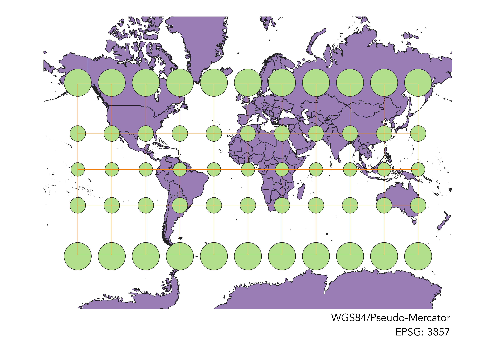
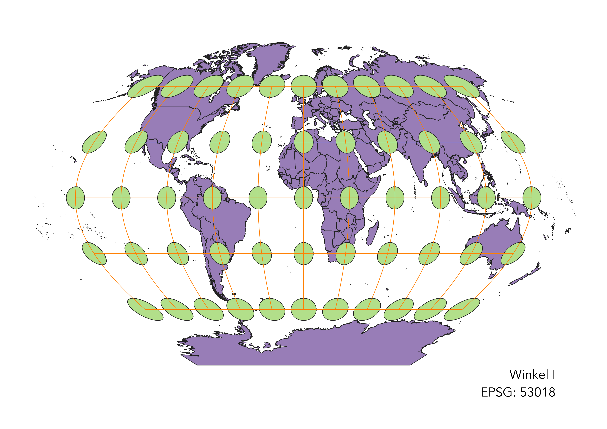
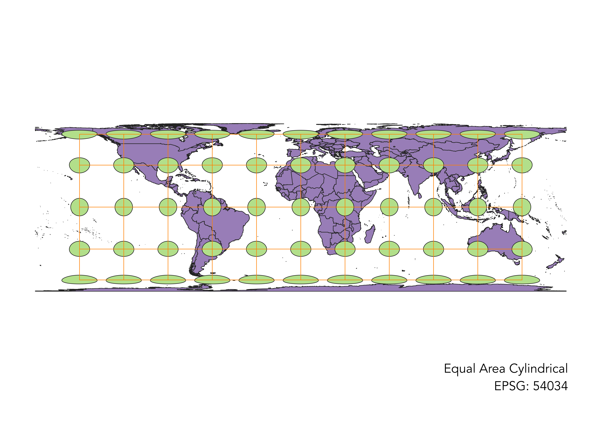
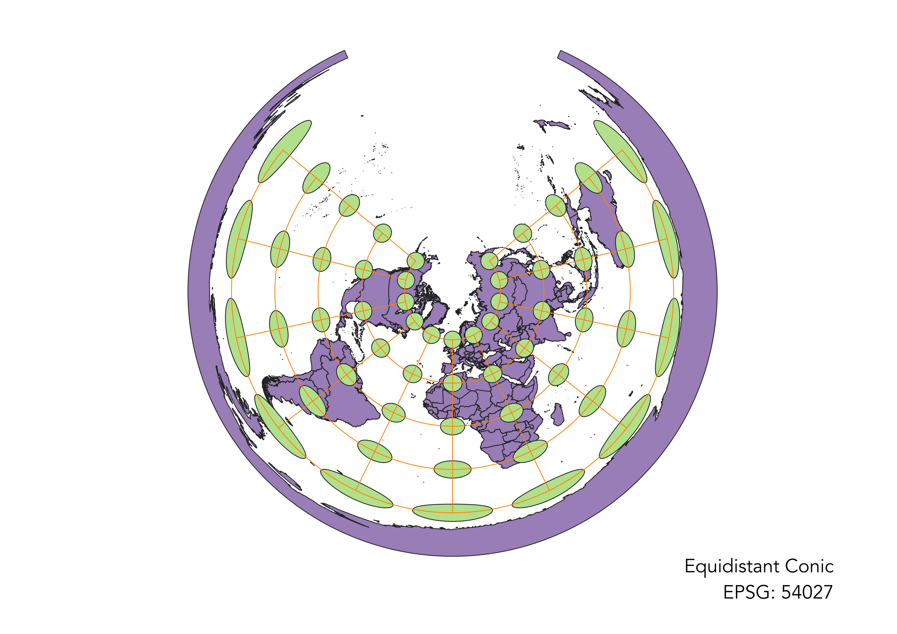
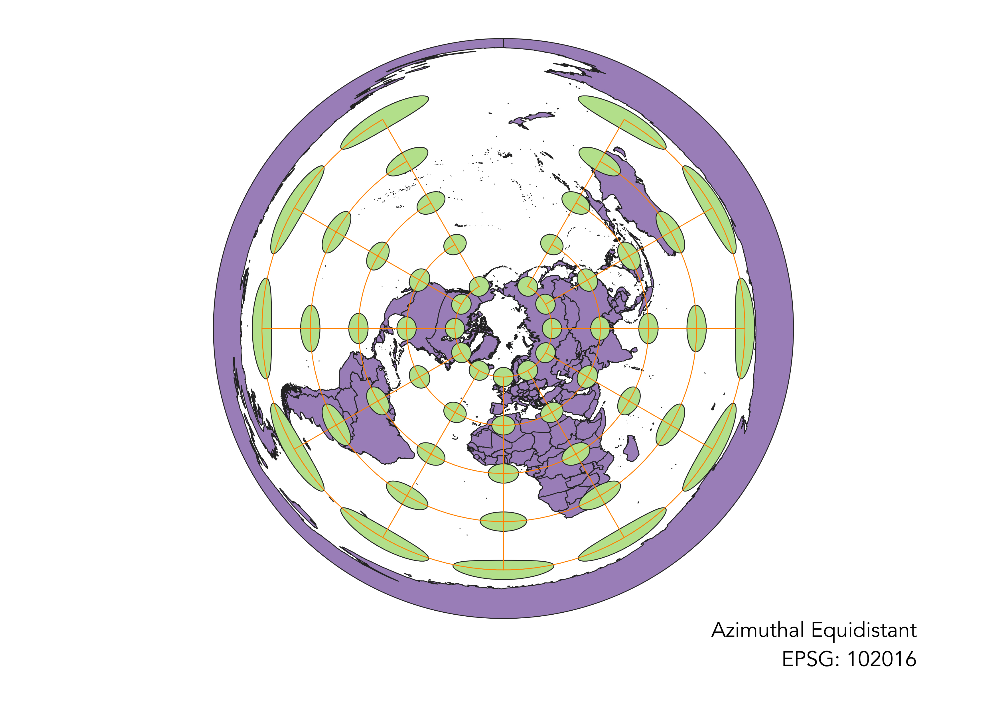
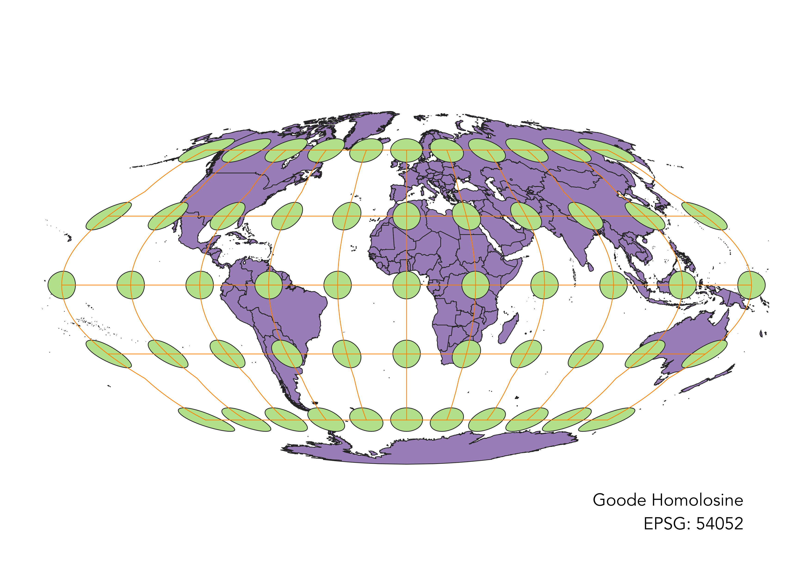
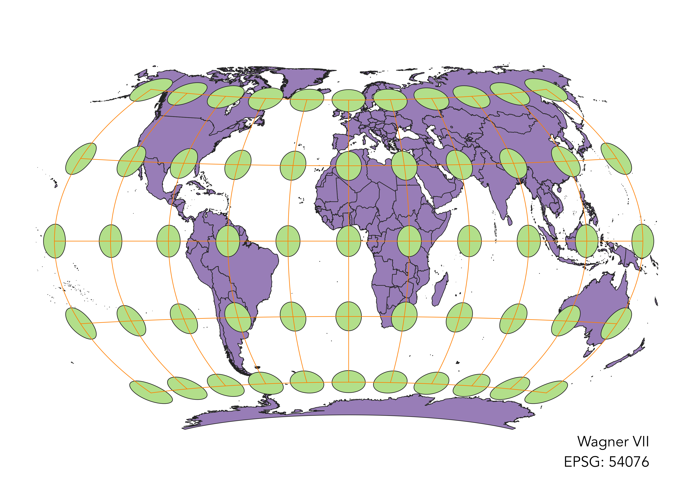

In this project I learned how to display images in different projections
How I displayed the map in different projections using QGIS:
After I uploaded the map to QGIS, I changed the projection by clicking on the “Current Coordinate Reference System” in the bottom right. After this opened a new window, I searched for a coordinate system using the projection name or the EPSG code. From the search results, I selected the projection I wanted and hit “apply.” I then closed the window and could see the reprojected map in QGIS.
WGS84
This map is in the traditional rectangular shape. As with any rectangular map, this inaccurately portrays the distance around the poles to be the same as the distance around the equator. Also, the circles become more like ellipsoids the closer to the poles, marking a distortion in shape. Area, on the other hand, seems to be mostly preserved.

Aitoff
This map is an oval, which allows it to more accurately represent the shorter distance around the poles compared to the equator. It also is able to mostly conserve area. The places with the most area distortion are in the corners of the map. There is also a slight distortion of shape as the circles become flattened towards the edges. The minor distortion of each of these characteristics suggest this map tried to compromise the distortion of each to be more generally accurate.

Pseudo-Mercator
This map is a traditional rectangular, which misrepresents the distance around the poles as being equivalent to around the equator. Area is also distorted, as the circles get larger in the latitudes above and below the equator. Shape is preserved, however, as there is no flattening of the circles.

Winkle I
As an oval map, it can more accurately represent the distance around the poles and equator. However, there are distortions to both shape and area. The circles near the equator are flattened, as are those on the edges of the map. At the edges of the map, the circles are also slight larger, representing the distortion of area. However, as these distortions are relatively minor, it suggests the map tried to make compromises in order to not have some major distortion.

Equal Area Cylindrical
This is a rectangular map projected with the cylindrical method. As the title suggests, it preserves the area of the continents. However, it majorly distorted shape as the circles become more like ellipsoids near the poles. Also, as a rectangular map it inaccurately represent the distance around the poles and equator.

Equidistant Conic
As a conic projection, this projection stands out from the rest because of its “top-down” view. This allows it to accuracy represent the distance around the North Pole as compared the the equator. However, the further from the North Pole, the more distorted the shape becomes. Antartica’s shape and area are severely distorted.

Azimuthal Equidistant
This projection accurately portrays the distance to circle Earth at the North Pole compared the equator. However, like other conic projections, it becomes more distorted the further from the North Pole, with Antarctica being severely distorted.

Goode Homolosine
With the oval shape of this map, the main goal seems to be to compromise the distortions of shape and area. There is little distortion near the center, but larger distortions towards the edges of the map. It also correctly presents a shorter distance around the poles than the equator.

Wagner VII
This map presents a shorter distance around the poles than the equator, but is not as accurate as the conic projections. Area is also generally preserved, with Antartica being a site of distortion. In addition to attempting to preserve area, the map attempts to minimize distortions to shape, with only minor flattening of the circles. Unlike some of the other maps, the most circular are found along the poles.

Data used for this project
Download Natrual Earth 1:10m Cultural Vector